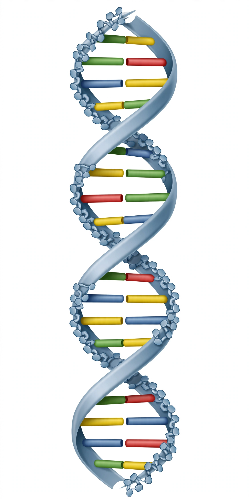

DNA

[Diagram: DNA double helix — two twisting backbones joined by rungs of paired bases A–T and C–G]Deoxyribonucleic acid (DNA) is a polymer composed of two polynucleotide chains that coil around each other to form a double helix. The polymer carries genetic instructions for the development, functioning, growth and reproduction of all known organisms and many viruses. DNA and ribonucleic acid (RNA) are nucleic acids, alongside proteins, lipids and complex carbohydrates, essential macromolecules for all known forms of life.
The two DNA strands run in opposite directions and are held together by hydrogen bonds between four bases — adenine (A) with thymine (T), cytosine (C) with guanine (G). The sequence of bases encodes information, organised into genes: stretches that cells transcribe into RNA and translate into proteins. In eukaryotes most DNA sits in chromosomes in the cell nucleus; a small amount resides in mitochondria.
History of discovery
DNA was first isolated by Friedrich Miescher in 1869 ("nuclein"). Experiments by Avery and by Hershey and Chase showed DNA — not protein — carries heredity. In 1953 James Watson and Francis Crick, building on X-ray diffraction data from Rosalind Franklin and Raymond Gosling (the famous "Photo 51") and Maurice Wilkins, and on Chargaff's base-pairing rules, published the double-helix model in Nature — a landmark of biology whose credit distribution is still debated in science history.
Replication, mutation and technology
Because each strand specifies its partner, DNA can be copied faithfully by polymerases — replication with proofreading, and repair systems for damage. Errors (mutations) plus recombination drive evolution and can also cause disease. Technologies built on DNA include sequencing (the Human Genome Project, completed 2003, sequenced roughly 3 billion base pairs), PCR amplification, DNA profiling in forensics, genetic engineering and CRISPR editing, and ancestry testing; large datasets are shared by institutions such as the NCBI.